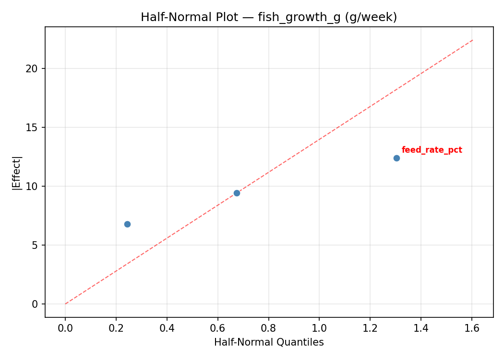
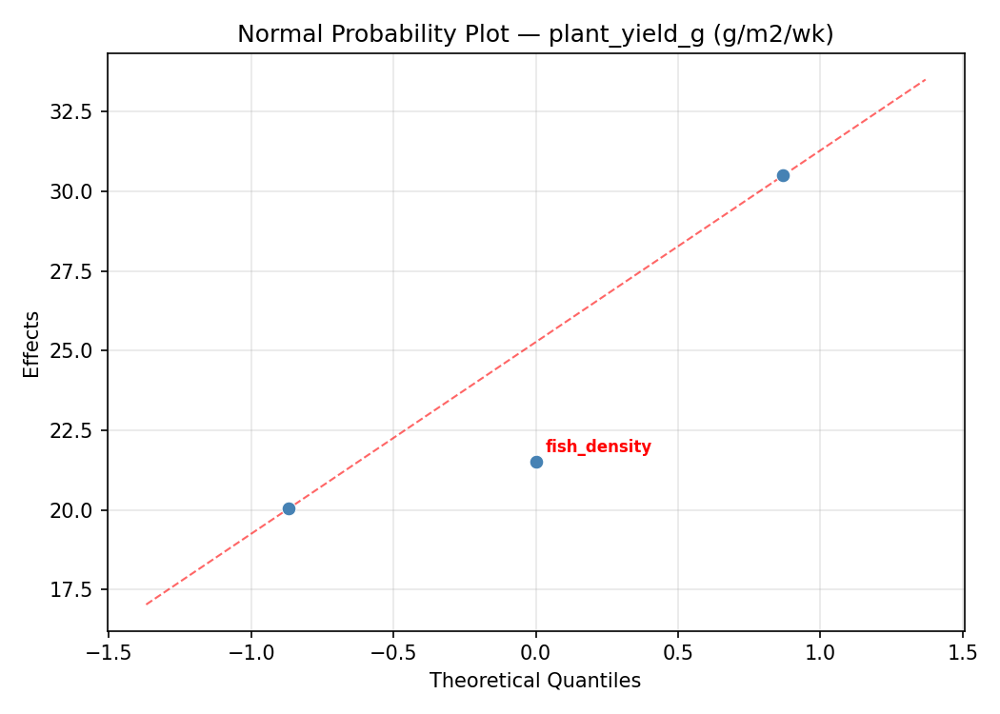
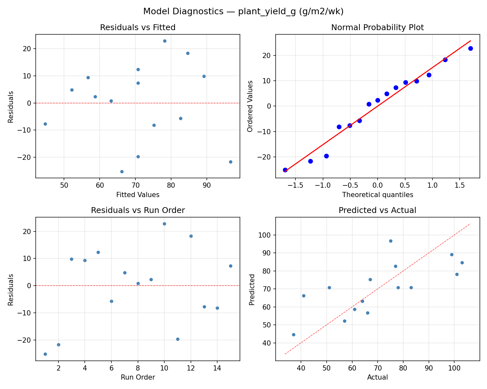

Summary
This experiment investigates aquaponics system balance. Box-Behnken design to maximize fish growth and plant yield by tuning fish density, feeding rate, and water flow rate.
The design varies 3 factors: fish density (fish/m3), ranging from 10 to 40, feed rate pct (%BW/day), ranging from 1 to 4, and flow rate lph (L/hr), ranging from 200 to 800. The goal is to optimize 2 responses: fish growth g (g/week) (maximize) and plant yield g (g/m2/wk) (maximize). Fixed conditions held constant across all runs include fish species = tilapia, plant = basil.
A Box-Behnken design was chosen because it efficiently fits quadratic models with 3 continuous factors while avoiding extreme corner combinations — requiring only 15 runs instead of the 8 needed for a full factorial at two levels.
Quadratic response surface models were fitted to capture potential curvature and factor interactions. The RSM contour plots below visualize how pairs of factors jointly affect each response.
Key Findings
For fish growth g, the most influential factors were fish density (41.3%), flow rate lph (40.1%), feed rate pct (18.5%). The best observed value was 36.7 (at fish density = 25, feed rate pct = 4, flow rate lph = 800).
For plant yield g, the most influential factors were flow rate lph (49.6%), fish density (36.6%), feed rate pct (13.8%). The best observed value was 103.0 (at fish density = 10, feed rate pct = 1, flow rate lph = 500).
Recommended Next Steps
- Run confirmation experiments at the predicted optimal settings to validate the model.
- Consider whether any fixed factors should be varied in a future study.
Experimental Setup
Factors
| Factor | Low | High | Unit |
|---|
fish_density | 10 | 40 | fish/m3 |
feed_rate_pct | 1 | 4 | %BW/day |
flow_rate_lph | 200 | 800 | L/hr |
Fixed: fish_species = tilapia, plant = basil
Responses
| Response | Direction | Unit |
|---|
fish_growth_g | ↑ maximize | g/week |
plant_yield_g | ↑ maximize | g/m2/wk |
Configuration
{
"metadata": {
"name": "Aquaponics System Balance",
"description": "Box-Behnken design to maximize fish growth and plant yield by tuning fish density, feeding rate, and water flow rate"
},
"factors": [
{
"name": "fish_density",
"levels": [
"10",
"40"
],
"type": "continuous",
"unit": "fish/m3"
},
{
"name": "feed_rate_pct",
"levels": [
"1",
"4"
],
"type": "continuous",
"unit": "%BW/day"
},
{
"name": "flow_rate_lph",
"levels": [
"200",
"800"
],
"type": "continuous",
"unit": "L/hr"
}
],
"fixed_factors": {
"fish_species": "tilapia",
"plant": "basil"
},
"responses": [
{
"name": "fish_growth_g",
"optimize": "maximize",
"unit": "g/week"
},
{
"name": "plant_yield_g",
"optimize": "maximize",
"unit": "g/m2/wk"
}
],
"settings": {
"operation": "box_behnken",
"test_script": "use_cases/135_aquaponics_balance/sim.sh"
}
}
Experimental Matrix
The Box-Behnken Design produces 15 runs. Each row is one experiment with specific factor settings.
| Run | fish_density | feed_rate_pct | flow_rate_lph |
|---|
| 1 | 25 | 1 | 200 |
| 2 | 25 | 2.5 | 500 |
| 3 | 40 | 2.5 | 800 |
| 4 | 40 | 2.5 | 200 |
| 5 | 25 | 2.5 | 500 |
| 6 | 25 | 2.5 | 500 |
| 7 | 10 | 2.5 | 800 |
| 8 | 40 | 1 | 500 |
| 9 | 25 | 1 | 800 |
| 10 | 40 | 4 | 500 |
| 11 | 10 | 2.5 | 200 |
| 12 | 25 | 4 | 800 |
| 13 | 10 | 1 | 500 |
| 14 | 10 | 4 | 500 |
| 15 | 25 | 4 | 200 |
Step-by-Step Workflow
1
Preview the design
$ python doe.py info --config use_cases/135_aquaponics_balance/config.json
2
Generate the runner script
$ python doe.py generate --config use_cases/135_aquaponics_balance/config.json \
--output use_cases/135_aquaponics_balance/results/run.sh --seed 42
3
Execute the experiments
$ bash use_cases/135_aquaponics_balance/results/run.sh
4
Analyze results
$ python doe.py analyze --config use_cases/135_aquaponics_balance/config.json
5
Get optimization recommendations
$ python doe.py optimize --config use_cases/135_aquaponics_balance/config.json
6
Multi-objective optimization
With 2 competing responses, use --multi to find the best compromise via Derringer–Suich desirability.
$ python doe.py optimize --config use_cases/135_aquaponics_balance/config.json --multi
7
Generate the HTML report
$ python doe.py report --config use_cases/135_aquaponics_balance/config.json \
--output use_cases/135_aquaponics_balance/results/report.html
Features Exercised
| Feature | Value |
|---|
| Design type | box_behnken |
| Factor types | continuous (all 3) |
| Arg style | double-dash |
| Responses | 2 (fish_growth_g ↑, plant_yield_g ↑) |
| Total runs | 15 |
Analysis Results
Generated from actual experiment runs using the DOE Helper Tool.
Response: fish_growth_g
Top factors: fish_density (41.3%), flow_rate_lph (40.1%), feed_rate_pct (18.5%).
ANOVA
| Source | DF | SS | MS | F | p-value |
|---|
| Source | DF | SS | MS | F | p-value |
| fish_density | 2 | 228.9402 | 114.4701 | 3.967 | 0.0635 |
| feed_rate_pct | 2 | 37.4852 | 18.7426 | 0.650 | 0.5478 |
| flow_rate_lph | 2 | 186.6452 | 93.3226 | 3.234 | 0.0935 |
| Lack | of | Fit | 6 | 459.0401 | 76.5067 |
| Pure | Error | 2 | 57.7067 | | |
| Error | 8 | 516.7468 | 28.8533 | | |
| Total | 14 | 969.8173 | 69.2727 | | |
Pareto Chart

Main Effects Plot

Normal Probability Plot of Effects

Half-Normal Plot of Effects

Model Diagnostics

Response: plant_yield_g
Top factors: flow_rate_lph (49.6%), fish_density (36.6%), feed_rate_pct (13.8%).
ANOVA
| Source | DF | SS | MS | F | p-value |
|---|
| Source | DF | SS | MS | F | p-value |
| fish_density | 2 | 1256.8690 | 628.4345 | 3.409 | 0.0849 |
| feed_rate_pct | 2 | 146.1548 | 73.0774 | 0.396 | 0.6852 |
| flow_rate_lph | 2 | 1359.6190 | 679.8095 | 3.688 | 0.0733 |
| Lack | of | Fit | 6 | 2662.0238 | 443.6706 |
| Pure | Error | 2 | 368.6667 | | |
| Error | 8 | 3030.6905 | 184.3333 | | |
| Total | 14 | 5793.3333 | 413.8095 | | |
Pareto Chart

Main Effects Plot

Normal Probability Plot of Effects

Half-Normal Plot of Effects

Model Diagnostics

Response Surface Plots
3D surfaces fitted with quadratic RSM. Red dots are observed data points.
fish growth g feed rate pct vs flow rate lph

fish growth g fish density vs feed rate pct

fish growth g fish density vs flow rate lph

plant yield g feed rate pct vs flow rate lph

plant yield g fish density vs feed rate pct

plant yield g fish density vs flow rate lph

Multi-Objective Optimization
When responses compete, Derringer–Suich desirability finds the best compromise.
Each response is scaled to a 0–1 desirability, then combined via a weighted geometric mean.
Overall Desirability
D = 0.9407
Per-Response Desirability
| Response | Weight | Desirability | Predicted | Dir |
|---|
fish_growth_g |
1.5 |
|
36.70 0.9545 36.70 g/week |
↑ |
plant_yield_g |
1.5 |
|
101.00 0.9270 101.00 g/m2/wk |
↑ |
Recommended Settings
| Factor | Value |
|---|
fish_density | 25 fish/m3 |
feed_rate_pct | 2.5 %BW/day |
flow_rate_lph | 500 L/hr |
Source: from observed run #10
Trade-off Summary
Sacrifice = how much worse than single-objective best.
| Response | Predicted | Best Observed | Sacrifice |
|---|
plant_yield_g | 101.00 | 103.00 | +2.00 |
Top 3 Runs by Desirability
| Run | D | Factor Settings |
|---|
| #12 | 0.9043 | fish_density=25, feed_rate_pct=1, flow_rate_lph=800 |
| #3 | 0.7655 | fish_density=25, feed_rate_pct=1, flow_rate_lph=200 |
Model Quality
| Response | R² | Type |
|---|
plant_yield_g | 0.2057 | linear |
Full Multi-Objective Output
============================================================
MULTI-OBJECTIVE OPTIMIZATION
Method: Derringer-Suich Desirability Function
============================================================
Overall desirability: D = 0.9407
Response Weight Desirability Predicted Direction
---------------------------------------------------------------------
fish_growth_g 1.5 0.9545 36.70 g/week ↑
plant_yield_g 1.5 0.9270 101.00 g/m2/wk ↑
Recommended settings:
fish_density = 25 fish/m3
feed_rate_pct = 2.5 %BW/day
flow_rate_lph = 500 L/hr
(from observed run #10)
Trade-off summary:
fish_growth_g: 36.70 (best observed: 36.70, sacrifice: +0.00)
plant_yield_g: 101.00 (best observed: 103.00, sacrifice: +2.00)
Model quality:
fish_growth_g: R² = 0.6459 (quadratic)
plant_yield_g: R² = 0.2057 (linear)
Top 3 observed runs by overall desirability:
1. Run #10 (D=0.9407): fish_density=25, feed_rate_pct=2.5, flow_rate_lph=500
2. Run #12 (D=0.9043): fish_density=25, feed_rate_pct=1, flow_rate_lph=800
3. Run #3 (D=0.7655): fish_density=25, feed_rate_pct=1, flow_rate_lph=200
Full Analysis Output
=== Main Effects: fish_growth_g ===
Factor Effect Std Error % Contribution
--------------------------------------------------------------
fish_density 8.5429 2.1490 41.3%
flow_rate_lph 8.3000 2.1490 40.1%
feed_rate_pct 3.8321 2.1490 18.5%
=== ANOVA Table: fish_growth_g ===
Source DF SS MS F p-value
-----------------------------------------------------------------------------
fish_density 2 228.9402 114.4701 3.967 0.0635
feed_rate_pct 2 37.4852 18.7426 0.650 0.5478
flow_rate_lph 2 186.6452 93.3226 3.234 0.0935
Lack of Fit 6 459.0401 76.5067 2.652 0.2990
Pure Error 2 57.7067 28.8533
Error 8 516.7468 28.8533
Total 14 969.8173 69.2727
=== Summary Statistics: fish_growth_g ===
fish_density:
Level N Mean Std Min Max
------------------------------------------------------------
10 4 19.0000 4.1721 14.1000 22.9000
25 7 25.9429 8.0496 14.4000 36.7000
40 4 17.4000 9.9980 7.9000 27.1000
feed_rate_pct:
Level N Mean Std Min Max
------------------------------------------------------------
1 4 21.6750 4.9264 14.4000 24.9000
2.5 7 23.2571 9.6093 7.9000 36.7000
4 4 19.4250 10.0910 9.7000 33.6000
flow_rate_lph:
Level N Mean Std Min Max
------------------------------------------------------------
200 4 24.2750 8.1164 14.4000 33.6000
500 7 23.7429 8.5841 9.7000 36.7000
800 4 15.9750 6.9144 7.9000 24.5000
=== Main Effects: plant_yield_g ===
Factor Effect Std Error % Contribution
--------------------------------------------------------------
flow_rate_lph 26.0000 5.2524 49.6%
fish_density 19.1786 5.2524 36.6%
feed_rate_pct 7.2143 5.2524 13.8%
=== ANOVA Table: plant_yield_g ===
Source DF SS MS F p-value
-----------------------------------------------------------------------------
fish_density 2 1256.8690 628.4345 3.409 0.0849
feed_rate_pct 2 146.1548 73.0774 0.396 0.6852
flow_rate_lph 2 1359.6190 679.8095 3.688 0.0733
Lack of Fit 6 2662.0238 443.6706 2.407 0.3223
Pure Error 2 368.6667 184.3333
Error 8 3030.6905 184.3333
Total 14 5793.3333 413.8095
=== Summary Statistics: plant_yield_g ===
fish_density:
Level N Mean Std Min Max
------------------------------------------------------------
10 4 61.2500 7.3201 51.0000 67.0000
25 7 80.4286 17.2033 57.0000 103.0000
40 4 63.0000 29.4392 37.0000 99.0000
feed_rate_pct:
Level N Mean Std Min Max
------------------------------------------------------------
1 4 72.2500 8.5391 64.0000 83.0000
2.5 7 72.7143 23.5564 37.0000 101.0000
4 4 65.5000 26.4512 41.0000 103.0000
flow_rate_lph:
Level N Mean Std Min Max
------------------------------------------------------------
200 4 83.0000 20.8646 64.0000 103.0000
500 7 71.4286 18.3290 41.0000 101.0000
800 4 57.0000 19.2527 37.0000 83.0000
Optimization Recommendations
=== Optimization: fish_growth_g ===
Direction: maximize
Best observed run: #10
fish_density = 25
feed_rate_pct = 4
flow_rate_lph = 800
Value: 36.7
RSM Model (linear, R² = 0.1057, Adj R² = -0.1382):
Coefficients:
intercept +21.8133
fish_density -3.0500
feed_rate_pct -1.5000
flow_rate_lph +1.1250
RSM Model (quadratic, R² = 0.8051, Adj R² = 0.4543):
Coefficients:
intercept +24.8333
fish_density -3.0500
feed_rate_pct -1.5000
flow_rate_lph +1.1250
fish_density*feed_rate_pct +6.1250
fish_density*flow_rate_lph +6.2750
feed_rate_pct*flow_rate_lph +4.3750
fish_density^2 -7.2542
feed_rate_pct^2 +4.0958
flow_rate_lph^2 -2.5042
Curvature analysis:
fish_density coef=-7.2542 concave (has a maximum)
feed_rate_pct coef=+4.0958 convex (has a minimum)
flow_rate_lph coef=-2.5042 concave (has a maximum)
Notable interactions:
fish_density*flow_rate_lph coef=+6.2750 (synergistic)
fish_density*feed_rate_pct coef=+6.1250 (synergistic)
feed_rate_pct*flow_rate_lph coef=+4.3750 (synergistic)
Predicted optimum (from quadratic model, at observed points):
fish_density = 10
feed_rate_pct = 1
flow_rate_lph = 500
Predicted value: 32.3500
Surface optimum (via L-BFGS-B, quadratic model):
fish_density = 10
feed_rate_pct = 1
flow_rate_lph = 200
Predicted value: 39.3708
Model quality: Good fit — general trends are captured, some noise remains.
Factor importance:
1. fish_density (effect: 10.4, contribution: 51.8%)
2. feed_rate_pct (effect: 6.3, contribution: 31.3%)
3. flow_rate_lph (effect: 3.4, contribution: 16.9%)
=== Optimization: plant_yield_g ===
Direction: maximize
Best observed run: #12
fish_density = 10
feed_rate_pct = 1
flow_rate_lph = 500
Value: 103.0
RSM Model (linear, R² = 0.1079, Adj R² = -0.1354):
Coefficients:
intercept +70.6667
fish_density -5.6250
feed_rate_pct -5.1250
flow_rate_lph +4.5000
RSM Model (quadratic, R² = 0.7816, Adj R² = 0.3885):
Coefficients:
intercept +83.0000
fish_density -5.6250
feed_rate_pct -5.1250
flow_rate_lph +4.5000
fish_density*feed_rate_pct +14.2500
fish_density*flow_rate_lph +16.0000
feed_rate_pct*flow_rate_lph +10.5000
fish_density^2 -17.6250
feed_rate_pct^2 +4.8750
flow_rate_lph^2 -10.3750
Curvature analysis:
fish_density coef=-17.6250 concave (has a maximum)
flow_rate_lph coef=-10.3750 concave (has a maximum)
feed_rate_pct coef=+4.8750 convex (has a minimum)
Notable interactions:
fish_density*flow_rate_lph coef=+16.0000 (synergistic)
fish_density*feed_rate_pct coef=+14.2500 (synergistic)
feed_rate_pct*flow_rate_lph coef=+10.5000 (synergistic)
Predicted optimum (from quadratic model, at observed points):
fish_density = 10
feed_rate_pct = 1
flow_rate_lph = 500
Predicted value: 95.2500
Surface optimum (via L-BFGS-B, quadratic model):
fish_density = 10
feed_rate_pct = 1
flow_rate_lph = 200
Predicted value: 106.8750
Model quality: Good fit — general trends are captured, some noise remains.
Factor importance:
1. fish_density (effect: 22.9, contribution: 46.8%)
2. flow_rate_lph (effect: 14.0, contribution: 28.6%)
3. feed_rate_pct (effect: 12.0, contribution: 24.6%)